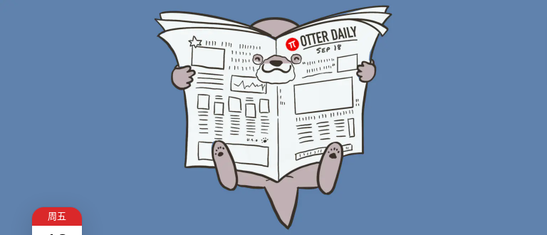
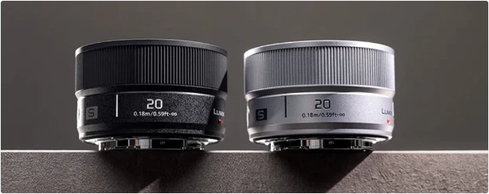
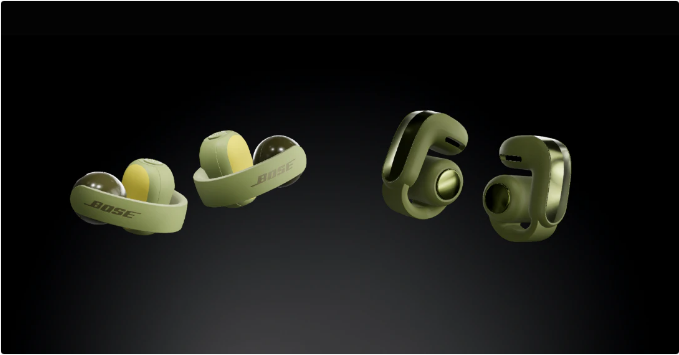

派早报：欧盟拟禁止 13 岁以下儿童使用社交媒体等

派早报
周五 18
欧盟拟禁止 13 岁以下儿童使用社交媒体
9 月 17 日，欧盟委员会通过《欧盟儿童法案》（EU KIDS Act）提案，拟禁止社交媒体平台向 13 岁以下儿童开放，并将独立开户的最低年龄统一设为 15 岁。提案还要求平台证明其服务适合相应年龄用户，并在设计阶段保障安全。按照提案，13 至未满 15 岁儿童可通过监护人开设和管理的子账户使用适龄社交媒体及视频分享服务，但须限制社交联系人，每日使用不超过一小时。3 至未满 13 岁儿童可通过监护人管理的账户使用专门设计的儿童友好视频服务，每日同样限时一小时。
针对向未成年人提供服务的社交平台、网络游戏及 AI 聊天机器人等，提案拟禁止成瘾性功能、无停顿的无限滚动和睡眠时段推送。AI 伴侣与聊天机器人须默认关闭，且不得以制造情感依赖的方式模拟人际关系；未成年人账户须默认设为私密。提案还要求在线服务和应用商店采用年龄核验措施，并由超大型在线平台提交合规计划、接受独立审计。目前提案已提交欧洲议会和欧盟理事会审议，尚未完成立法。来源
月之暗面发布 Kimi 金融行业 AI 解决方案
月之暗面于 9 月 17 日宣布推出 Kimi 金融行业解决方案，整合 Kimi 金融行业的产品与能力，涵盖 10+ 权威数据源、9 项金融技能和 5 项合规安全措施，以及机构级的数据建模和报告交付能力。该解决方案将提供持仓早报、财报点评、项目筛选、深度研究和组合复盘等，将数据获取、专业分析与成果交付连接起来。该方案可将此前以天计的资料处理和初稿制作压缩到小时级，帮交易员减少工作压力。同时该解决方案内置 Wind 万得、东方财富、标普全球、财联社、财新数据等海内外数据源。数据通过 MCP 直接接入研究服务，关键数字可以回到原始出处核对，来源、口径清晰可查。此外该解决方案还将内置 Scholar 学术论文检索能力、Word / Excel / PDF 等 Office 格式内容生成工具，图片和语音生成工具等。目前中国工商银行、中信建投证券、易方达、红杉中国、真格基金等数十家机构已采用该方案。来源
Mistral 与 Mozilla 展开 AI 合作
9 月 16 日，Mistral 与 Mozilla 宣布合作，为 Firefox 的 AI 浏览助手 Smart Window 测试版提供模型支持。合作首批覆盖法国和北美用户，预计今年晚些时候扩展至英国和德国。Smart Window 可协助用户处理复杂搜索、找回此前浏览过的内容，以及根据需求从标签页中搜集信息。双方表示，正在围绕地区语言、方言和文化背景训练及微调模型，以提升回答对当地语境的理解能力。隐私方面，Mozilla 默认不会在其服务器上保存 Smart Window 的对话，Mistral 等合作方则同意遵守零数据留存要求。来源
发表首评来源
松下发布 LUMIX S 20mm F2.5 超广角镜头
9 月 16 日，松下推出 LUMIX S 20mm F2.5 镜头，这款镜头专为街拍创作者打造，F2.5 光圈适合在光线较弱的环境使用。规格方面，该镜头最近对焦距离为 0.18m，整机重量仅 142g，长度仅 40.9mm，体积与此前配合 LUMIX S9 推出的 18-40mm F4.5-6.3 变焦头、40mm F2 基本一致，方便随身携带。镜头采用 62mm 滤镜口径，支持自定义对焦环与 FN 按钮。该镜头采用 9 组 11 片光学结构，带有 3 片非球面镜片、3 片 ED 低色散镜片，拥有 7 片光圈叶片。目前售价尚未公布。来源

Bose 发布两款开放式无线耳机
9 月 17 日，Bose 发布 Bose Sport Open Earbuds 与 Bose Ultra Open Earbuds (2nd Gen) 两款开放式无线耳机。Sport Open Earbuds 针对运动场景设计，注重佩戴稳定性、舒适度与耐用性，采用弹性耳夹与实体按键设计。单次续航 7 小时，有黑白绿三色可选，定价 199 美元。Ultra Open Earbuds 二代采用更新的发声单元，有更好的低音表现与更高的音量上限，支持 Snapdragon Sound 与 aptX Adaptive，并支持空间定位的影院模式、通话语音优化等功能。单次续航 9 小时，有黑白红绿四色可选，定价 299 美元。

左：Sports Open Earbuds；右：Ultra Open Earbuds (2nd Gen)
OpenAI 推出 Astra for Law
9 月 17 日，OpenAI 发布面向律师事务所和法律科技公司的 Astra for Law，将 GPT‑6 Astra 与法律检索索引、专业分析及写作指令结合，用于法律研究和工作流程。其法律检索索引覆盖超过 2.3 亿个网址，可查询美国判例、成文法、法规等资料，并每日补充来源。OpenAI 表示，在 Vals AI 法律研究基准私有验证集的 200 道美国法律问题上，双方均采用最高推理强度时，Astra for Law 的整体正确性通过率为 54%，仅使用网页搜索的 GPT‑6 Astra 为 38.7%。面向符合条件的律所，该方案提供 API 零数据保留，ChatGPT Enterprise 使用内容默认不接受人工审查。同时，OpenAI 推出若干合作伙伴开发的插件以配合实践，并正式开放 ChatGPT for Word，方便校对、修改建议和格式问题检查。来源
全国网安标委秘书处发布三项与电子设备回收相关的网络安全标准实践
为配套 GB 46864-2025《数据安全技术 电子产品信息清除技术要求》强制性国家标准落地实施，全国网安标委秘书处组织 30 余家存储芯片厂商、电子产品制造商、回收经营者和第三方机构等，编制了 3 项网络安全标准实践指南供参考使用。《半导体存储介质块擦除技术指引》明确了半导体存储介质块擦除技术的实现方法和具体操作指令，适用于指导半导体存储介质厂商、电子产品厂商等适配、调用和验证块擦除指令；《电子产品回收过程中的信息清除管理指引》明确了信息清除日志格式、内容和回收管理要求，以及信息清除标识的样式和使用方法；《移动智能终端信息清除技术指引》明确了手机、平板电脑等移动智能终端信息清除的具体方法、操作过程和验证要求。来源
不妨一看的简讯
据 The Information 报道，知情人士透露 Apple 正筹划推出企业级服务器，计划面向 AI 开发者、企业和政府机构销售。基础版配备两颗计划中的 M8 Ultra 芯片，高配版则配备四颗，并使用英伟达 NVLink Fusion 完成芯片连接。NVLink Fusion 包括交换机、芯粒和软件，能够让数据中心内的多颗芯片高速协同工作。预计最早 2029 年上市，项目仍可能取消或不采用英伟达技术。Apple 曾在 2002 年至 2011 年间销售 Xserve 服务器，芯片先后采用 IBM 和英特尔的产品。来源
据 Bleeping Computer，微软承认适用于 Windows 11 系统的 9 月累计更新 KB5124008 存在问题，可能会导致域信任关系故障。Reddit 有管理员表示，Windows 11 25H2 工作站安装 9 月累积更新后，设备在重启时出现域登录失败。卸载 KB5124008 并修复域关系后，设备恢复访问。该管理员推测该问题与微软的机器身份隔离有关。微软表示已注意到相关报道并正在调查，有相关信息将及时发布。来源
抖音上线声音侵权举报入口，可在网页端批量侵权举报工具选择「冒用声音」发起投诉。来源
反盗版方案公司 Denuvo 于 9 月 14 日在美国加州北区地方法院起诉匿名游戏破解者 voices38，指控其在至少 26 款游戏中绕过反篡改保护。Denuvo 希望获得经济赔偿，并对其施加游戏破解禁令。该诉讼有趣的点在于，Denuvo 没有涉案任何一款游戏的版权，案件只围绕反破解条例进行；Denuvo 并不知道 voices38 的真实身份，因此被告栏显示的是「未知个人或实体」。来源
广电总局在 17 日举行的「开局起步『十五五』」系列主题新闻发布会上介绍，广电总局将在今年同工业和信息化部制定一体化电视技术标准，将机顶盒功能以软件形态内置于电视机中，打造极简终端形态，用户将使用通用遥控器，一台电视享受全类型电视业务。来源
Kimi 上线了新的会员计划，价格从 49 每月至 699 每月不等。来源
GoPro 于 9 月 17 日正式加入 M43 联盟。GoPro 于上月底推出了使用 M43 卡口的可换镜头紧凑相机 Mission 1 Pro ILS，尽管采用 M43 卡口，该相机无电子触点，且仅使用 1 英寸传感器。来源
9 月 17 日，据每日经济新闻，有接近赛力斯的知情人士在接受采访时透露，明年 1 月 1 日起，华为专营店将分为专卖问界车型与混卖其他「四界」车型两种。来源
少数派的近期动态
你可能错过的文章
往期派早报
查看全部


> 下载 少数派 2.0 客户端、关注 少数派公众号，解锁全新阅读体验 📰
> 实用、好用的 正版软件，少数派为你呈现 🚀
暂时还没有评论，先来评论一条吧